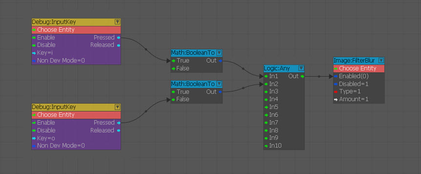
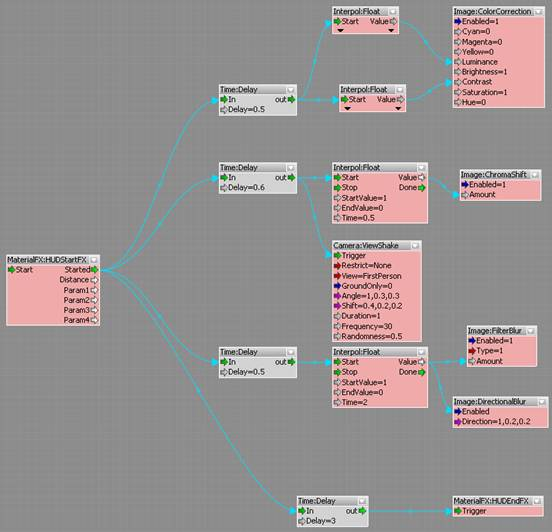
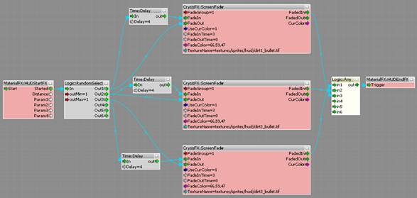

Overview
It is possible to use the Flow Graph to create full screen effects. This document explains the nodes and functions for making these effects.
Effect Nodes
Camera Nodes
Found in Camera. These nodes can make camera effects. ViewShake generates random shake animation of the camera. It is effective to connect with explosive effects.
- Trigger: Triggers the effect.
- Restrict: Selects a condition for the ViewShake. This can be set to 'None' for no condition, 'NoVehicle' if the shake should be applied only if the player is not in a vehicle, or 'VehicleOnly' if the effect should be applied only if the player is inside a vehicle.
- View: Selects camera to apply effect. Can be 'FirstPerson' for the Player, of 'Current' if you want to apply a ViewShake for a trackview sequence for example.
- GroundOnly: When it's on, only apply the shake when the player is standing on the ground.
- Angle: Controls the angle of the camera shake movement.
- Shift: Controls the shift distance of the camera shake movement.
- Duration: Controls duration from start to end of the effect.
- Frequency: Controls frequency of the shake movement.
- Randomness: Controls the randomness of the shake movement.
Image Nodes
This can be found in Add Node → Image. Image nodes are used to expose post process effects that can be used for gameplay or cutscenes purposes.
When using the image or camera nodes it's not necessary to set an entity to the Image nodes, they will automatically be assigned to the local player and even though most of the nodes have the enabled and disabled input it's safer to ignore the disabled input and just use the enabled input and set it to be true or false. The inputs are also of the boolean type and so it's always best to combine these nodes with the Math:BooleanTo node to be sure that the correct values are being sent to the image node.
Here is an example of a flowgraph that turns on/off the FilterBlur fullscreen FX with input keys:

Node | Description |
|---|---|
ColorCorrection | Sets the final image color changes for gameplay/cutscenes. For final image color grading use the "Time of Day" controls instead. |
FilterBlur | Applies blur filter to screen. |
FilterRadialBlur | Applies radial blur effect to screen. |
FilterGrain | Applies grain filter to screen. |
FilterSharpen | Applies an sharpen mask to the whole screen. |
DirectionalBlur | Applies directional blur effect to the whole screen. Can be used for example for hit effects. Depends on motion blur, if it is enabled. |
ChromaShift | Applies chroma dispersion (multiple RBG sampling instead of single sample) effect to the whole screen. |
EffectWaterDroplets | Game specific effect, applies water flowing over the screen. This was made to be used when camera comes out of a water volume and is usually done automatically by the game engine. |
EffectWaterFlow | Another game specific effect, applies water flowing through screen. This was made to be used when camera is receiving any kind of water flow (e.g.: sprinkles, waterfalls). Should be used subtly. |
AlienInterference (expensive) | Specially designed to generate alien noise/interference effect, when the player gets close to a specific source. |
DistantRain (expensive) | Game specific effect, renders multiple volumetric layers at distance. Should be used in conjunction with some rain particles as a mean to decrease amount of particles required. |
EffectBloodSplats | Game specific effect, renders blood splats onscreen. |
EffectCondensation | Game specific effect, simulates condensation on screen. |
EffectFrost | Game specific effect, simulates frost accumulation on screen. |
RainDrops | Game specific effect, simulates rain drops falling on screen. |
VolumetricScattering (expensive) | Game specific effect, simulates nearby volumetric foggy environment. |
Full usage information on these nodes can be found here: Image Nodes
MaterialFX Nodes
To implement full screen effect to the particle effect, its flow graph has to use these nodes. Found in Add Node/MaterialFX.
HUDstartFX
Decline the start of the full screen effect to the engine.
Input Port
- Start: Triggered automatically by the MaterialEffects systems
Output Ports
- Started: Triggered when the effect is started
- Distance: Distance to player
- Param1-4: Custom float parameters which can be set in the XML description of the effect
HUDEndFX
Decline the end of a full screen effect to the engine.
- Trigger: Trigger this port when the effect is finished. This MUST be done to notify that the effect can be re-used again.
Implement full screen effect to the game. To implement a full screen effect into the game, you have to save Flow Graph and call it in game.
- Make an Effect's Flow Graph.
- Make a HUDstartFX and HUDendFX node.
- Make a Delay node ( Add Node/Time/Delay ).
- Set the Delay value to minimum required duration to involve whole duration of the effect Flow Graph.
- Connect the Started of the HUDstartFX to every starting point of every effect node, and the In port of the tweaked Delay node.
- Connect the Out of Delay node to the Trigger of the HUDendFX node.
- Save the Flow Graph in
Libs/MaterialEffects/Flowgraphs. - If you use full screen effect as an impact effect of the bullet or explosion, implement saved xml file's name to
/Effect/FlowGraph/nameline of the appropriate effect, inLibs/MaterialEffects/FXLibs/bulletimpacts.xml. This xml authorizes the required elements of the effect, such as particle effect, sound, bullet decal.
Examples
To actually make full screen effect Flow Graph, you have to use some more general nodes. Here are some examples:
Adjust timing, animate value
This is an example Flow Graph of the impact effect of nuclear weapon.

- Use a HUDstartFX and a HUDendFX node, connected to a Delay node, so the effect lasts the whole duration of the Flow Graph.
- Use a Delay node just previous of the every effect nodes. This node is often used to adjust each node's activation timing.
- Use a Float node ( Add Node/Interpol/Float ) to animate some values of Color Correction . It can set Time , StartValue and EndValue. When it gets input, it interpolates value between StartValue to EndValue in the duration of Time , and then gives output value to the next node. This is useful way to make animated values.
- Some nodes getting same output value from the same node. Usually, output value can connect to multiple inputs. This is the good point to decrease amount number of the nodes.
Fade in Textures on Screen
This is an example Flow Graph of the dirt effect on the screen, when player was near to explosion.

- Use a RandomSelect node ( Add Node/Logic/RandomSelect ) to randomly pick a texture from the three available.
- Use a ScreenFader node to fade in each texture. This node was originally designed for fade out whole screen. Using this method, you can pop up textures, and then fade them out after few seconds.
- Pop up texture: When gets input, ScreenFader node starts fade out whole screen and starts display texture, in duration of FadeOutTime. In this case, FadeOutTime is set to 0, so the texture pops up immediately.
- Delay the fade in: FadeIn is delayed 4 second by the Delay node, so texture remains on the screen for the while. 4 seconds later, whole screen starts fade in, in duration of the FadeInTime value. Then it seems texture is fading out in 3 seconds duration.
- Use an Any node ( Add Node/Logic/Any ), to gather the output textures and pick up the one to display.